Timber Tractor / Chapter 02 / Camera notebook
The Way Home: Timber Tractor Chapter 2
From the picnic clearing to the shared family home.
13 of 13 images generated. Independent inspection complete. Two targeted corrections reviewed; two originals retained. Review candidates, not approved.
Generation 1 / Reading position 5
The house at the end of the path
The family home appears beyond the trees.
Camera. Camera30cm above stonepath about10m fromfrontdoor; full unobstructed exterior, slightleftthreequarter.
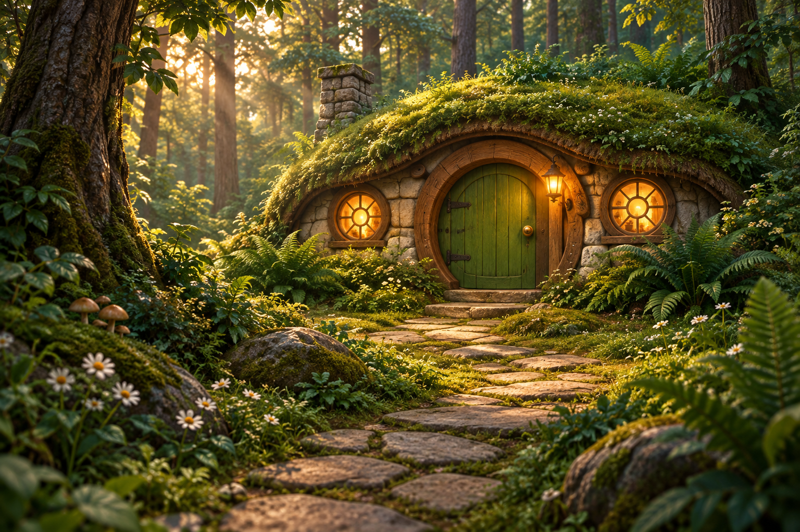
What I See
Inspected the actual 1536 x 1024 PNG with view_image. Empty low-path exterior clearly reveals a moss roof, one green rounded door with two strap hinges on viewer LEFT and brass knob RIGHT, lantern immediately right, exactly two round windows, and chimney at roof LEFT. The curving stone path and large surrounding ferns establish an intentional low woodland camera. Window tracery appears eight-spoked rather than the prompt's six; the interior plate retains this eight-spoke arrangement. Door proportions and material detail read clearly; exact metre dimensions cannot be recovered from the image. No characters, so anatomy, family sizes and basket continuity are not applicable. Review candidate; final visual approval remains with Miguel.
Markdown record · Full-resolution image
{kind=link}
Exact Prompt
Use case: illustration-story. One continuous landscape1536x1024 illustration, no panels or lettering. Establish the PinPin family cottage from reference1's exterior in the rich dimensional woodland rendering of reference2. Camera30cm above a winding flagstonepath, about10metres from the house, slightleftthreequarter angle. A small low stone-and-curved-timber cottage nestles among tall living forest trees. Thick green moss covers the undulating roof, a short stonechimney sits at its left end. Central round-topped green wooden door, hinges on its LEFT as seen from outside, brassknob on right, single amberlantern immediately rightofdoor. Exactly two circular six-spoke windows, one eachside, warm light inside. Hedgehog-scale dwelling: doorway roughly70cm high, houseabout3m wide, tallferns bywalls, modest foreground daisies show scale. Stones leadgently uphill to one shallowthresholdstep. Soft lateafternoon becoming evening, coolgreen forestshade and warmwindowlight, detailed moss/bark/stone with retainedhighlights. Empty environment, no characters or vehicles. This exact door/window/roof arrangement anchors subsequent camera moves.
References
- farm-book-cottage.jpeg: Architecture reference only: mossroof, greenroundeddoor, twocircularwindows.
- image18.png: Preferred dimensional timber material and warm domestic style, not camera/composition.
{kind=link}
{kind=link}
Generation 2 / Reading position 8.5
The family kitchen: empty camera anchor
Establish the interior before the family enters.
Camera. Back of frontroom facing facade: closedgreenfrontdoorcenter, windowsflankingdoor, tableleft underwindow, stoveonright belowchimney.
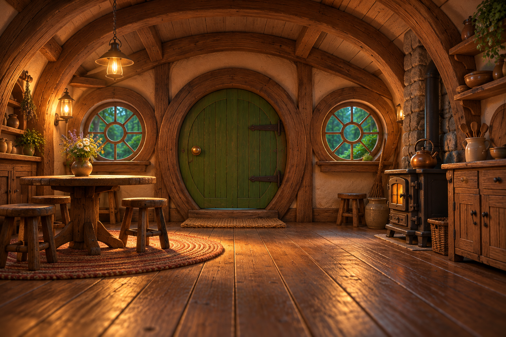
What I See
Inspected the actual 1536 x 1024 PNG with view_image against scene-05. The reverse facade reads coherently: closed green door has hinges on viewer RIGHT and brass knob LEFT; two round spoke windows flank it; table and flowers are LEFT, stove, kettle and chimney masonry RIGHT. Curved timber beams and a floor-level view establish usable room depth. Both windows appear eight-spoked, matching the rendered exterior rather than its six-spoke prompt. Three stools are at the table and an additional stool stands by the stove. This is an empty intermediate camera anchor, not a reader selection. No character anatomy or family scale can be verified in an empty room. Review candidate; final visual approval remains with Miguel.
Markdown record · Full-resolution image
{kind=link}
Exact Prompt
Use case: illustration-story. Create the EMPTY interior of the exact little cottage in reference1, rendered with the curved-timber craftsmanship of reference2. Landscape1536x1024. Camera inside at the back of the main kitchen, 40cm above the wooden floor, looking toward the front facade. The central green rounded frontdoor is closed; viewed from INSIDE its hinges are RIGHT and brassknob LEFT. One circular spoke-window on EACH side of door. Under the LEFT window is a small round wooden kitchen table with three modest stools and a vase of meadowflowers. Along RIGHT wall under the chimney is a small stove with kettle, simple wooden cupboards and open shelves of clay bowls. Curved oak beams, warm pale plaster between beams, polished wornfloorboards, a small wovenrug beside table. Modest hedgehog-scale room, soft amber pendantlamp, cooler eveninggreen light through windows. Retain clear materialtexture and gentle highlights. No characters, no food feast, no lettering. One coherent room; no duplicate doors. Geometry is the reverse view of the exterior, not a newhouse.
References
- scene-05.png: Exact exteriorgeometry; interiorreverse left/right.
- image18.png: Richdimensional kitchenmaterials and cozycurvedbeams.
Generation 3 / Reading position 1
Packing up the picnic
The family gets ready to go home.
Camera. Picnic-eye-height, mediumwide slightlycloser than chapter1picnic, clearhandsandfaces.
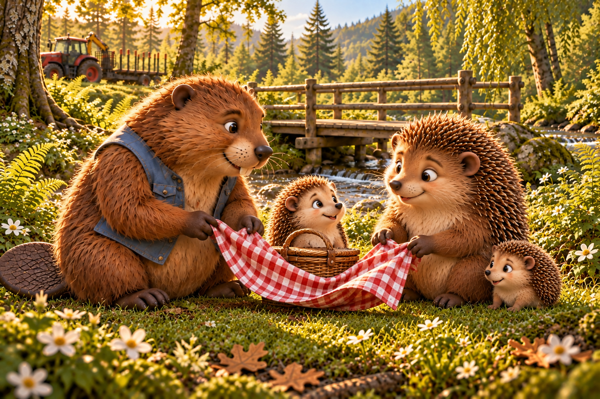
What I See
Inspected the actual 1536 x 1024 PNG with view_image and compared the supplied scene-15-v2 reference. Exactly four familiar figures are readable: blue-vest Beaver on LEFT is largest, Mama on RIGHT is adult-sized, PinPin is behind the basket, and PomPom is the small baby beside Mama. Beaver and Mama visibly hold opposite cloth edges with two forepaws each; the exposed arms connect plausibly into their upper bodies, while cloth and fur hide some lower-body attachments. PinPin's lower body is hidden by basket/cloth, so his exact size ratio and hidden limbs cannot be verified; baby is clearly smaller but the requested half-bodylength ratio is not measurable here. Faces are clear and engaged. Parked red tractor, empty trailer, folded crane and intact bridge remain in the background. Basket is set on the ground while packing. Review candidate; final visual approval remains with Miguel.
Markdown record · Full-resolution image
{kind=link}
Exact Prompt
Use case: illustration-story. Continue the scene in the reference a few minutes later, new camera a little closer at grass level. Landscape1536x1024, rich dimensional woodland book rendering. The picnic is finished. Beaver onLEFT in his bluecanvasvest and Mama onRIGHT gently lift opposite edges of the same red-and-white checkedcloth to fold it. They each use two clear frontpaws; natural seatedhaunches. Small PinPin waits by a little wickerpicnicbasket between them; baby PomPom sits close to Mama looking curiously at the cloth. Keep the exact warm faces, naturalcreamfur andbrownquills fromreference, but make baby distinctly tiny, about HALF PinPin's bodylength and oneTHIRD Mama's. Onlyfourcharacters. Beaver larger thanMama. Fruit safelypacked, onlybasket andcloth remain. Same intact woodenbridge, shallowstream, ferns anddaisies, empty redtimbertractor parkedfarleft withfoldedyellowcrane. Lateafternoonlight softens, retainfurhighlightdetail. Clear expressive animalfaces, naturalshortlimbs, no clothes onhedgehogs. No lettering.
References
- scene-15-v2.png: Exact fullcastidentities, picnicsite andparkedtractor.
{kind=link}
Generation 4 / Reading position 2
Goodbye at the forest path
The family leaves Beaver and the tractor at the picnic clearing.
Camera. Camera15m along forestpath lookingback diagonal towardclearing, familyforeground movingtowardrightedge.
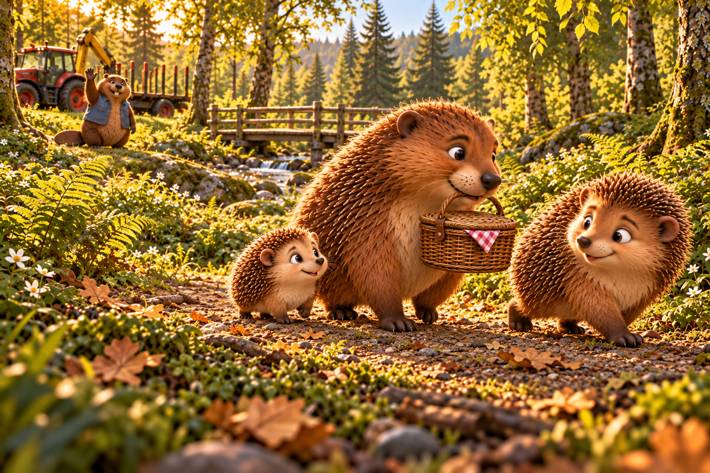
What I See
Inspected the actual 1536 x 1024 PNG with view_image against scene-01. Three family figures travel toward viewer RIGHT; PinPin ahead looks back, tiny PomPom stays beside larger Mama, and distant blue-vest Beaver waves beside the stationary tractor and empty trailer. Mama visibly grips the basket handle in her mouth, with checked cloth beneath its lid. Visible paws and exposed leg segments read as walking support; basket, fur and body overlap hide some shoulder/far-side attachments, which are unverified. All three faces are clear. Continuity concern: Mama's muzzle, large rounded ear and swept fur/quills look more elongated and Beaver-like than her compact pointed-quill appearance in scene-01; the adult/child/baby size hierarchy itself remains clear. Review candidate with facial-model drift noted; final visual approval remains with Miguel.
Markdown record · Full-resolution image
{kind=link}
Exact Prompt
Use case: illustration-story. New camera15metres along the forestpath looking diagonally back toward the picnic clearing, low30cm viewpoint. Landscape1536x1024 same dimensional woodland style. The three hedgehogs walk naturally on four shortlegs toward the RIGHT foreground, heading into the forest. Mama gently carries the little closed wickerbasket by its handle IN HER MOUTH; a corner of folded redwhitecloth peeks underbasketlid. Tiny baby PomPom walks very close besideMama, half olderbrother PinPin's bodylength. PinPin slightlyahead, turning his head back toward their friend. In the leftbackground Beaver in hisbluevest raises oneforepaw in goodbye, beside the same stationary redtractor, EMPTY trailer and folded yellowcrane. The repairedbridge and stream recede behindhim. Fine brownquills, creamfur and established clear appealing faces exactly asreference. True smallhedgehog scale beside ferns and fallenleaves; Mama larger, PinPin medium, PomPom tinyroundedbaby. Gentlelateafternoon light, texturedhighlights. Onlythesefourcharacters, nolettering.
References
- scene-01.png: Family and Beaveridentities, smallbasket, location andpackedpicnic state.
Generation 5 / Reading position 3
Three little backs on the path
The family walks deeper into the forest toward home.
Camera. Camera20cm above trail about3metres behindfamily, forwardalongwindingpath, wideforestdepth.
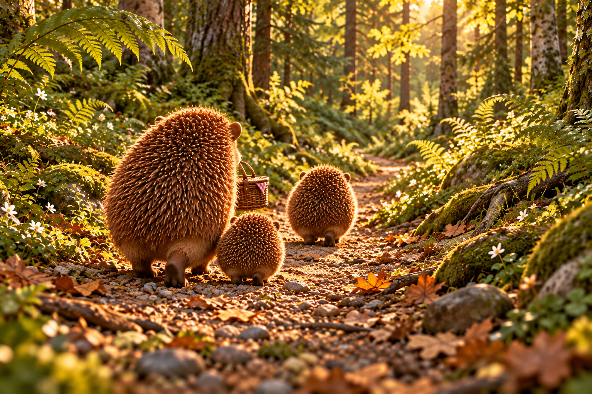
What I See
Inspected the actual 1536 x 1024 PNG with view_image against scene-02. Exactly three distinct backs follow the curving path away from the low camera: largest Mama on LEFT, PomPom close on her right, PinPin farther ahead. Basket hangs beside Mama's muzzle and the handle approaches her hidden mouth, but the actual bite is occluded and cannot be verified from this rear angle. Rear paws/haunches are visible; foreleg attachments and faces are concealed by bodies/quills, so full four-leg anatomy and facial identity are unverified. PinPin is farther from camera and therefore only moderately larger on screen than PomPom; their exact physical ratio cannot be measured. No cottage, Beaver or tractor intrudes. The forward path and oversized ferns make the rear camera intentional. Review candidate; final visual approval remains with Miguel.
Markdown record · Full-resolution image
{kind=link}
Exact Prompt
Use case: illustration-story. Move us fifty metres farther along the forest path from the reference, then place the camera BEHIND the family, low20cm above the trail, three metres behind them, looking forward in their directionoftravel. Landscape1536x1024. We see THREE small rounded hedgehog backs walking AWAY from us into a winding forestpath. PinPin walks a littleahead incenter; largerMama follows onleft with the same smallclosedwickerbasket carried byhandle in her mouth; tinybaby PomPom stays immediately atMama's rightside, halfPinPin's size. Natural fourshortlegged walking, rearhaunches and quills dominate, heads orientedforward; readableindividual silhouettes. The forest is much larger than them: fernfronds arch above, mossyroots besidepath, smallgoldenpatches of lateafternoonlight fartherahead. Detailedstones, leaves and treebark. No house visibleyet; the picnicclearing, beaver andtractor are now behind camera. Same dimensional woodland rendering, gentlehighlighttexture and calmforwardmovement. No lettering.
References
- scene-02.png: Exact family sizes, quills, naturalwalkingposture andbasket.
Generation 6 / Reading position 4
PomPom finds another little face
The baby pauses at his reflection while the family waits.
Camera. 10cm over shallowpuddle, gentle sideangle, baby's reflection legibleforeground, MamaandPinPinfurtherback.
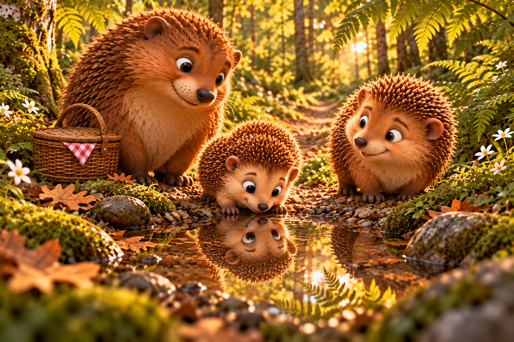
What I See
Inspected the actual 1536 x 1024 PNG with view_image. Exactly three family members pause at a shallow puddle: PomPom leans down in the foreground, Mama watches from close LEFT, and PinPin waits RIGHT. The baby's reflected face aligns below his own head rather than reading as a fourth animal. Two baby forepaws rest at the bank; exposed lower forelimbs join the chest plausibly, but head/quills and the frontal overlap hide their full upper attachments and rear limbs. Mama's basket is clearly set on the ground with the same checked cloth. All faces are readable and the puddle-height camera gives the reflection a clear purpose. Baby is smaller than PinPin but perspective enlarges him in the foreground, so the requested exact half-bodylength ratio is not visually established. Mama retains scene-02's larger rounded ear and elongated facial model; scene-01 has a more compact Mama face. Review candidate with size/identity limits recorded; final visual approval remains with Miguel.
Markdown record · Full-resolution image
{kind=link}
Exact Prompt
Use case: illustration-story. Move the camera to10cm above a tiny shallowpuddle beside the same woodlandpath. Landscape1536x1024, warm dimensionalstory illustration. Baby PomPom innearforeground leans his short cream muzzle toward his own clear reflection, two tinyfrontpaws resting on dryedge, hindquarters rounded with delicatebrownquills. He is a very smallbaby, HALF olderbrotherPinPin's bodylength. The reflected face belongs tohim and aligns with hishead, not anotheranimal. Mama waits immediatelybehindleft, looking gentlydown, her same smallclosedwickerbasket with checkedcloth set onground besideher. PinPin waits to theright, smiling towardhisbabybrother. Establish allthree referencefaces, naturalcompact fourlimbedbodies. Puddle no larger thanMama's bodylength, calm thinwater among mossandflatstones. Ferns arch overhead, eveninglight reflected softly, clear detail in creamfur and water, no harshwhiteglare. No othercharacters or vehicles, nolettering.
References
- scene-02.png: Familyface and sizeidentity, littlebasket.
- scene-03.png: Windingforestpath, fernscale, light.
Generation 7 / Reading position 6
The last stones before the door
Mama and the brothers approach their own green door.
Camera. Move five metresforward along established stonepath, 20cm high behindfamily.
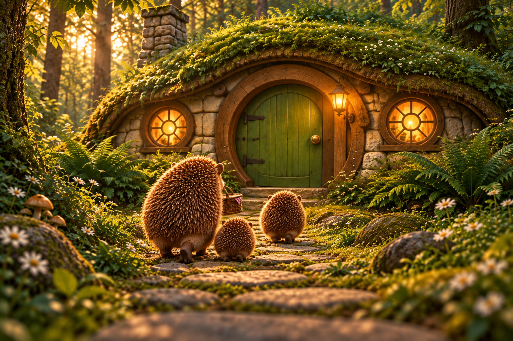
What I See
Inspected the actual 1536 x 1024 PNG with view_image against scene-05 and scene-03. The low rear approach advances along the same stone path to the moss cottage; exterior green door still has hinges LEFT and knob RIGHT, lantern RIGHT, two eight-spoke circular windows and chimney LEFT. Exactly three separate backs retain Mama largest on LEFT, baby close beside her and PinPin ahead RIGHT. Mama's basket hangs near the forward muzzle, but the bite is hidden; rear paws/haunches are visible while faces and foreleg attachments are occluded and unverified. Door, both windows and roof remain readable; the closer camera serves the approach without changing the facade. Subject height versus the more distant doorway cannot establish the prompt's precise half-doorheight scale, but the family reads small relative to the home. Review candidate; final visual approval remains with Miguel.
Markdown record · Full-resolution image
{kind=link}
Exact Prompt
Use case: illustration-story. Take the exact house inreference1 and move the camera five metresforward along its stonepath, lowering to20cm aboveground. Keep the whole greenfrontdoor and bothcircularwindows visible, with the mossroof and leftchimney. Add the three hedgehogs fromreference2, seen frombehind walking AWAY fromcamera towardtheirfrontdoor. Mamaleft with same littlewickerbasket carried in her mouth; tinyround babyPomPom rightbesideher; PinPin a littleaheadright, mediumsize betweenMama andbaby. Naturalcompactwalkingbodies, fourshortlegs with farlimbsnaturallyhidden, finebrownquills. Keep them genuinelysmall: Mama's head reaches only abouthalf the doorheight whennearestdoor, PinPin smaller, babyhalfPinPin. Doorstaysclosed, outsidehingesLEFT, knobRIGHT, lanternRIGHT, twowindowsmatchingreference. Warmwindowlight contrasts coolergreen shade as eveningapproaches; retaineddetail in furandmoss. Sameforest, pathstones and home, noBeaverortractor. Landscape1536x1024, nolettering.
References
- scene-05.png: Exact house andpathcameraanchor.
- scene-03.png: Threefamilybacks, quills, sizehierarchy, basketcarriedbyMama.
Generation 8 / Reading position 7
Mama opens the green door
At the threshold, Mama opens the family's front door.
Camera. Outside, 30cmhigh close threequarterangle fromrightofpath framinggreen door andfamily; lanternupperright.
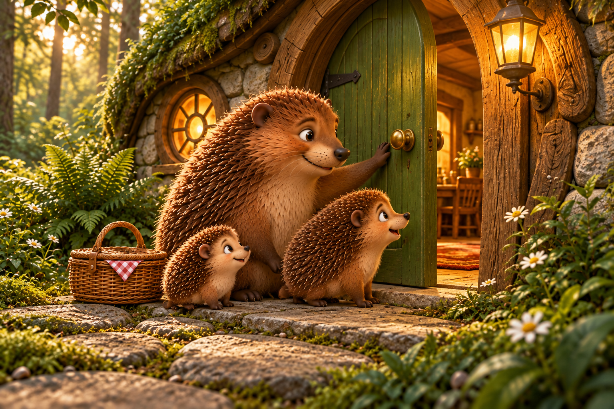
What I See
Inspected the actual 1536 x 1024 PNG with view_image against the exterior and family references. Close low three-quarter threshold camera shows the green door opening inward with strap hinge on its outside LEFT, knob on RIGHT and single lantern to the outside RIGHT. Exactly three family faces are clear: Mama largest reaches to the door, PinPin waits to her RIGHT, and baby is smallest at LEFT. Mama's reaching foreleg visibly connects to the upper side of her chest; the other frontpaw rests near her lower torso, and seated haunches support her. Boys' exposed frontlegs connect plausibly into their chests; overlaps conceal some far-side and rear attachments, which remain unverified. Basket is correctly set down on the stone, but its top appears open/uncovered rather than the closed lidded basket on the path. Mama retains the elongated muzzle/rounded ear from scene-02. Only the left exterior window fits this tight crop; the image cannot verify the second window or full kitchen floor plan. Warm interior through the gap motivates the camera change. Review candidate with basket/identity drift noted; final visual approval remains with Miguel.
Markdown record · Full-resolution image
{kind=link}
Exact Prompt
Use case: illustration-story. Move close to the exact green cottagefrontdoor in reference1, camera30cm high justRIGHT of the stonepath, threequarter view of the threshold. Landscape1536x1024. Mama fromreference2 has set the wickerpicnicbasket withredwhitecloth on the stone besideher. She gently pushes the green door INWARD with one frontpaw near its brassknob. Hinges remain onLEFT seenfromoutside; door partlyopen inward, warmwooden interior glimpsedthroughgap. Mama rests naturally on herhaunches, otherfrontpaw nearbody. PinPin at herRIGHT looks eagerly inside, tiny babyPomPom nearherleftforequarter looks upatMama; baby HALF PinPin's bodylength, oneTHIRD Mama, roundshortbabymuzzle. Exactlythreefamilycharacters, sameappealingfaces, unclothedcompacthedgehogs withbrownquills andcreamfur. Single amberlantern staysoutsideRIGHT of doorway; thickroundedwoodframe, mossabove, flatthresholdstone. Keep scale: Mama comfortablybelowdoorheight, no humanlengthlegs. Gentlewarm indoorlight and cooler forestshade, clearfurdetail. No lettering.
References
- scene-05.png: Exact doorhingesleftknobright, lanternright, cottagearchitecture.
- scene-02.png: Family faces, bodyratios, basket.
Generation 9 / Reading position 8
Across the threshold
The family enters their home.
Camera. Insidekitchen30cm high facingfrontdoor, reverse ofexterior; tableleftstoveright.
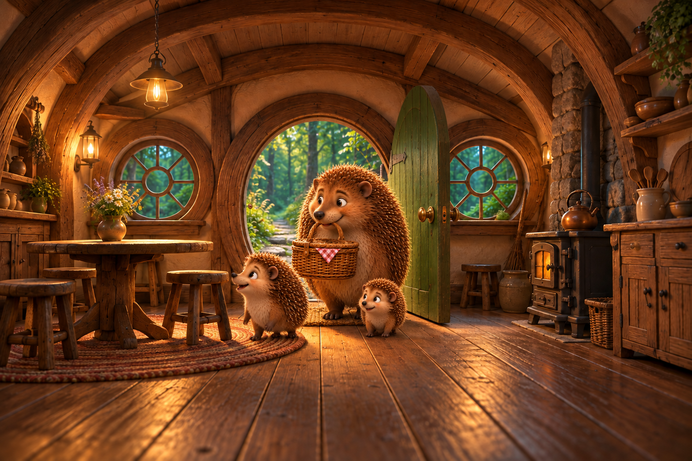
What I See
Inspected the actual 1536 x 1024 PNG with view_image against kitchen-plate. Reverse view preserves table/flowers LEFT, stove/kettle/chimney RIGHT, two eight-spoke windows and curved beams. Door is swung into the RIGHT side of the room from the right jamb; visible attachment is consistent with the interior hinge side, though not every hinge is exposed. Mama visibly grips the checked-cloth basket handle in her mouth; basket top still reads open rather than clearly closed. Three clear faces and adult/older-child/baby size hierarchy are readable, and PinPin looks toward the table. Posture concern: Mama and especially PinPin read upright on hind feet, with frontpaws hanging or hidden, rather than clearly continuing the four-paw walking posture of the path scenes. No extra limb attachment is visibly established. PinPin's visible hanging forelimb is plausibly attached to his upper chest, but this does not establish four-paw ground support; Mama's basket hides forelimb attachments, which remain unverified. Mama's facial model appears more compact again than scene-02/07. Review candidate with walking-posture issue requiring parent/Miguel review; no approval claimed.
Markdown record · Full-resolution image
{kind=link}
Exact Prompt
Use case: compositing. Use reference1 as the exact kitchen edit target. Keep camera, roomgeometry, lefttablewithflowers, rightstove, timberbeams, twocircularwindows andwoodenfloor. Open its greenfrontdoor INWARD on the RIGHT-hand hinges seenfrominside; the door swings towardthe rightside ofroom, revealing the woodedstonepath beyond. Add the threehedgehogs fromreference2 entering towardcamera throughthisdoor. Mama comes just behindthechildren, carrying the SAMEsmallclosed wickerbasket byhandle in her mouth, foldedredwhiteclothcornervisible. PinPin has crossedthethreshold and looks toward the table onLEFT, tinybabyPomPom takes his little steps immediatelybesideMama. BabyhalfPinPinlength andonethirdMama, exactwarmfaces andbrownquills fromreference2, shortnatural fourlimbed walkingbodies. Wholefamilyis clear and gentlylit, noextracharacters. Preserve the room's warmshadedfurdetail, cooler forest throughdoor, noexposureboost. Landscape1536x1024, nolettering.
References
- kitchen-plate.png: Exact interiorlayout, door andwindowgeometry.
- scene-07.png: Exact threefamilyidentities andthresholdcontinuity.
Generation 10 / Reading position 9
At their own little table
Home at last, PinPin tells Mama about the day while PomPom settles beside her.
Camera. Move closer to tableleftofkitchen keepingfrontdoorbackground andstoveright.
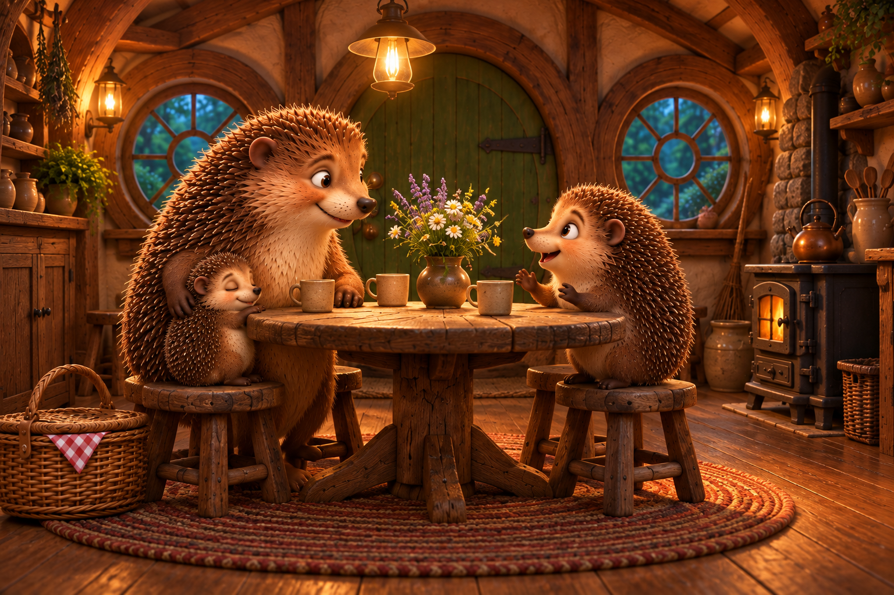
What I See
Inspected the actual 1536 x 1024 PNG with view_image against kitchen-plate and scene-08. Exactly three family members gather at the round table: Mama LEFT, sleepy smallest PomPom against her side, PinPin RIGHT gesturing as he talks. Faces are readable, baby eyes intentionally closed; relative ages are clearer here than in the foreshortened puddle view. Mama's embracing foreleg visibly runs from her upper side around baby; her other frontpaw rests on the table. PinPin's two visible forepaws gesture above the tabletop rather than both resting on it; exposed segments join his upper torso plausibly. Table and stools hide some lower-body attachments, which remain unverified. Three cups, meadowflower vase, grounded closed basket with cloth, two windows, right-hand interior hinges and stove RIGHT persist. Continuity concerns: the door appears to carry two brass knobs vertically on its LEFT side instead of the single knob in kitchen-plate; the closer view centers table in front of door and no longer clearly preserves its under-left-window position. Baby occupies the front stool while Mama appears behind on a separate stool rather than sharing one wide seat. Review candidate with door-hardware/furniture staging drift noted; final visual approval remains with Miguel.
Markdown record · Full-resolution image
{kind=link}
Exact Prompt
Use case: illustration-story. Move the camera nearer the little table on the LEFT of the kitchen inreference1, to a cozy mediumwide view at40cmheight. Same room: curvedwoodbeams, two roundwindows, greenfrontdoor nowCLOSED inbackground, stoveonright, woodenfloor andpotteryshelves. Mama and her two boys fromreference2 are now settledat thisroundtable. Mama sitsnaturally on a lowstool left, smiling at olderbrotherPinPin acrossfromher; tiny babyPomPom nestles sleepily againsther side on thesamewide stool. Her onefrontpawrests gentlyaroundbaby, otherfrontpaw ontableedge. PinPin on hisownlowstool has twofrontpaws ontable and smilesexcitedlyatMama as iftellingher abouttheday. Naturalshorthedgehog bodies, brownquills, softcreamfur, warmclearfacesmatchingreference2; babyHALFPinPinbodylength. Their closedwickerbasket with redwhiteclothcorner rests onfloorbesidethetable, meadowflowervase unchanged. Three smallplaincups ontable, no feast. Cozywarm lamplight withcoolerbluegreen eveningwindows, retainedfurtexture and restrainedexposure. No othercharacters. Landscape1536x1024, nolettering.
References
- kitchen-plate.png: Exactroomgeometry andmaterials.
- scene-07.png: Threefamilyfaces, naturalbodies andbabysize.
Generation 11 / Reading position 10
A warm window in the evening
The family is safely home; the forest grows quiet outside.
Camera. OutsidefrontRIGHTwindow, closeatwindowheight lookingtowardbackofkitchen; windowframeforeground.
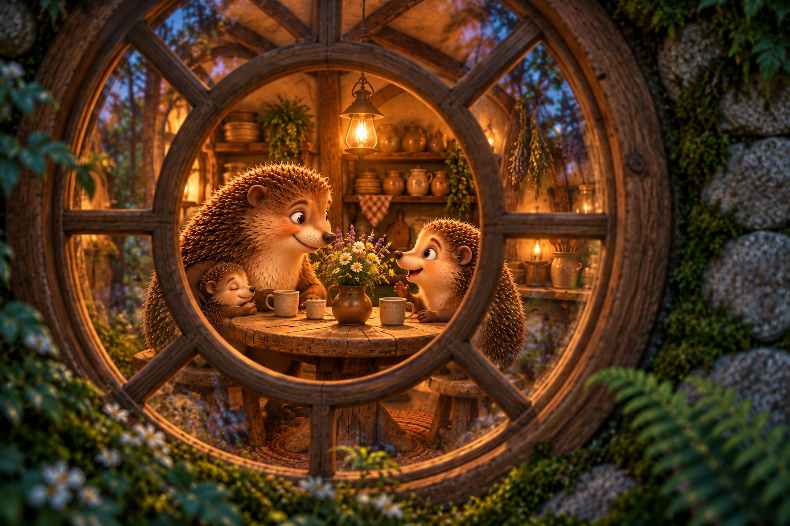
What I See
Inspected the actual 1536 x 1024 PNG with view_image against scene-05 and scene-09. Intentional intimate exterior view through a round spoke-window shows exactly three family members at the table: Mama LEFT, visibly sleeping smallest PomPom against her, and PinPin RIGHT talking with clear eye contact. The clear central pane keeps bars off all faces; faint forest reflections sit mainly in the surrounding panes. Three cups, meadowflower vase and warm timber/pottery setting carry forward. Back wall and shelves appear beyond the family, with no front door or front windows incorrectly placed behind them. The window's central circular opening is substantially enlarged relative to scene-05 to frame the faces; this is architectural detail drift, not proof of exact window geometry. Visible PinPin forepaw gestures and baby's resting forepaws appear connected plausibly, but window bars, table, fur and overlap conceal most full limb attachments; these remain unverified. Basket and most seating are outside/behind the visible framing, so their positions cannot be verified. Family grouping repeats scene-09 closely rather than demonstrating a measured camera reversal. Review candidate with enlarged window ring noted; final visual approval remains with Miguel.
Markdown record · Full-resolution image
{kind=link}
Exact Prompt
Use case: illustration-story. Final landscape1536x1024. Put the camera OUTSIDE the cottage at the front-RIGHT circularwindow ofreference1, about70cm high, looking through its glass toward the BACK of the kitchen. Close intimate view: round wooden spoke-window takes mostofcomposition, moss andstone surroundit, softfernleaves atedges. Inside, the SAMEthreehedgehogs fromreference2 sit at their smallroundtable: Mamawarmlylistens, tiny babyPomPom nestlesasleep againstherside, PinPin facesMama talkingabouttheday. See them in a new threequartersideangle fromthiswindow, withfaces legible in theclear glasspanes, barsnotcoveringeyes. Maintain brownquills, creamfur, babymuchsmallerthanPinPin, threecups andmeadowflowers. Beyondthem is the kitchen's BACK wall with curvedwoodbeams andpotteryshelves; the frontdoor andfrontwindows are onCAMERA'Swall andtherefore NOT behindthefamily. Outside is coolbluegreen evening, interiorsoftamberlight. Faintforestreflection alongglassedges, clearfamilyview throughthecenter. Gentlecontrolledhighlights, noaddedanimals orlettering. A peacefulending at home.
References
- scene-05.png: Exact front-right circularwindow, moss andstone exterior.
- scene-09.png: Familyat-table identities, sleepyPomPom andcup/flower arrangement; move camera tooutside, do notcopyfrontalbackground.
Generation 12 / Reading position 8
Across the threshold: grounded walking poses
Correct the arriving family's gait without redesigning the scene.
Camera. Preserve original scene08 camera androom exactly.
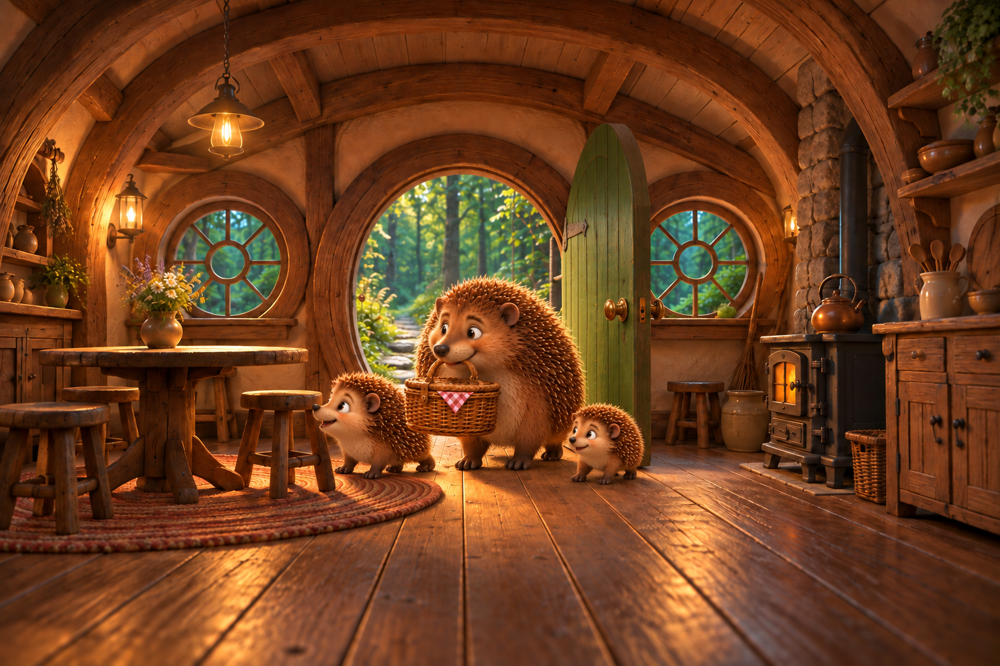
What I See
Inspected the actual 1536 x 1024 PNG with view_image against retained scene-08 and the walking reference. The targeted posture correction is visible: Mama, PinPin and baby now have lower forward-leaning bodies and short forelegs reaching the floor ahead of the haunches, replacing the upright entrance poses. Visible exposed leg segments connect plausibly under their chests, with no visible extra attachment. Basket/body overlap still conceals portions of Mama's shoulders and far-side limbs; hidden attachments remain unverified. Mama visibly carries the basket by its handle in her mouth. All three faces remain clear, Mama largest, PinPin medium and PomPom smallest. Left table/flowers, right stove, both circular windows, right-swung door, beams and low interior camera remain recognizable. Exact half-size ratios are not measurable from this view. Reviewed correction resolves the observed upright-posture concern; original scene-08 is retained as a superseded attempt. Final visual approval remains with Miguel.
Markdown record · Full-resolution image
{kind=link}
Exact Prompt
Use case: precise-object-edit. Edit reference1 only to correct the three hedgehogs' BODY POSTURES. Keep their exact faces, quills, relative size, existing floor positions and eyelines, basket and allroomdetail. Mama, PinPin and tinybaby should walk naturally on FOUR short legs, bodies tiltedforward and low tofloor, like the walking posture inreference2. Twoforelegs connect underchest and contactfloor ahead ofbody; twohindlegs underhaunches, with farsidelegsnaturallyoccluded. PinPin is currently upright with forepaws hanging: lower hischest andplace bothforepaws onfloor ahead ofhishaunches, looking towardlefttable. Similarlyground Mama'sforepaws while she keeps basketbyhandleinmouth; babyhas acompact lowwalkingbody. Preserve their recognizable headshapes andexpressions, Mama largest, PinPinmedium, babyhalfPinPin. Keep entire kitchen, openright-hingedgreen door, outsidepath, lighting, woodtexture, stool/tablepositions, windows, stoveandbasket unchanged. No added limbs or characters, no lightingpolish. Landscape1536x1024.
References
- scene-08.png: Exact edit target: room, camera, faces, basket anddoor unchanged.
- scene-02.png: Natural four-legged walking posture only, not scenery or faces.
Generation 13 / Reading position 9
One door, one knob
Remove the duplicate door knob from the settled family scene.
Camera. Preserve scene09exactly.
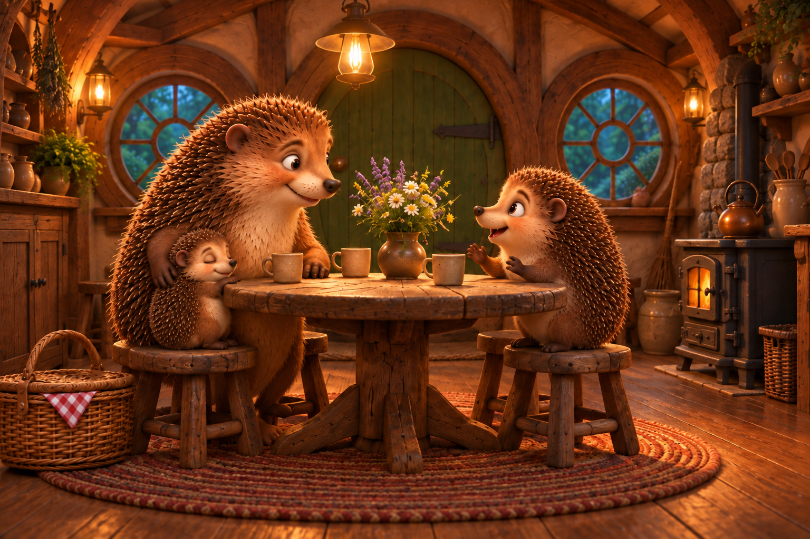
What I See
Inspected the actual 1536 x 1024 PNG with view_image against retained scene-09. The lower duplicate brass knob is gone, replaced by green door planks; one upper knob remains on viewer LEFT and the interior strap hinges stay RIGHT. The targeted door-hardware issue is resolved. Mama, sleeping PomPom and talking PinPin retain clear expressions, age/size hierarchy, the embracing arm and visible forepaw gestures. Three cups, vase/flowers, grounded closed basket, right stove and both windows remain recognizable. This is a visual comparison, not a claim that all unedited pixels are identical. Full limb attachments behind table, bodies and stools remain unverified. Approximate centered table framing and the baby's separate front stool remain recorded caveats, not further correction requests. Original scene-09 is retained as a superseded attempt. Final visual approval remains with Miguel.
Markdown record · Full-resolution image
{kind=link}
Exact Prompt
Use case: precise-object-edit. In this exact image, the closed green door behind Mama has TWO brass knobs vertically aligned near its left edge. Remove ONLY the LOWER duplicate knob (below the main knob, behind the flowers and near Mama's muzzle height), replacing it with uninterrupted matching green wooden planks. Keep the upper original brass knob. Change nothing else: preserve all three hedgehogs' exact faces, paws, bodies and expressions, sleepy baby, table, cups, vase, flowers, basket, chairs, stove, windows, lighting, color, exposure, camera and framing. No overall polishing. Same1536x1024 landscape.
References
- scene-09.png: Exactedit target: all unchangedexcept duplicatedlowerdoor knob.
Source and Process
New continuation of the Timber Tractor adventure, separate from Chapter 2 of the original book.
Family and Home
Mr. PomPom is Mr. PinPin's one-year-old-equivalent baby brother. Both live with Mama and Papa; only Mama and the two brothers travel home in this chapter.
The farm-book green door and moss roof are exterior references. Original Chapter 34 supplies dimensional timber interiors; the adaptation chooses a coherent layout rather than claiming the older images share an exact floor plan.
The Method, in Order
- Establish the empty exterior and kitchen as camera anchors.
- Revisit the picnic and place the full cast directly, keeping baby PomPom distinctly smaller.
- Follow the family's direction of travel, then reverse the camera at the doorway.
- Inspect faces, visible limb attachments, scale, luggage and room continuity.
- Align trilingual narration with each image and explicit vertical print pages.
- Test, publish and retain exact prompts, timestamps and all attempted outputs.
Camera and Reading Plan
- The house at the end of the path Camera30cm above stonepath about10m fromfrontdoor; full unobstructed exterior, slightleftthreequarter.
- The family kitchen: empty camera anchor Back of frontroom facing facade: closedgreenfrontdoorcenter, windowsflankingdoor, tableleft underwindow, stoveonright belowchimney.
- Packing up the picnic Picnic-eye-height, mediumwide slightlycloser than chapter1picnic, clearhandsandfaces.
- Goodbye at the forest path Camera15m along forestpath lookingback diagonal towardclearing, familyforeground movingtowardrightedge.
- Three little backs on the path Camera20cm above trail about3metres behindfamily, forwardalongwindingpath, wideforestdepth.
- PomPom finds another little face 10cm over shallowpuddle, gentle sideangle, baby's reflection legibleforeground, MamaandPinPinfurtherback.
- The last stones before the door Move five metresforward along established stonepath, 20cm high behindfamily.
- Mama opens the green door Outside, 30cmhigh close threequarterangle fromrightofpath framinggreen door andfamily; lanternupperright.
- Across the threshold Insidekitchen30cm high facingfrontdoor, reverse ofexterior; tableleftstoveright.
- At their own little table Move closer to tableleftofkitchen keepingfrontdoorbackground andstoveright.
- A warm window in the evening OutsidefrontRIGHTwindow, closeatwindowheight lookingtowardbackofkitchen; windowframeforeground.
- Across the threshold: grounded walking poses Preserve original scene08 camera androom exactly.
- One door, one knob Preserve scene09exactly.
Measured, Not Estimated
513.6 seconds summed image-call wall time across 13 registered calls. This includes tool waiting, not just model computation. It excludes preparation, review, publishing and any undocumented earlier work. No monetary cost is exposed by these calls.
Records above follow actual generation time. Reading positions are recorded separately. Every attempt has its own filename and record; a retry is not counted as a successful one-shot.
Continuity
No colored-limb preproduction. Short reference chains, positive camera direction, whole-cast placement and independent visual review.
Clean house views count as story images where they advance the reveal. Tool durations are wall times, not prices or project elapsed time.